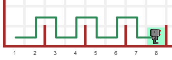

Warning
This document is in the middle of a major revision. Some sections might be missing text, or have French text as placeholder.
이번 학습에서, 리보그가 완수해야만 하는 도전과제(작업) 대부분을 간략하게 소개한다. 도전과제는 리보그 세상 위쪽 메뉴에서 선택할 수 있다. 여러분이 해야 되는 것은 리보그 작업으로 기술된 것을 완수하는 프로그램을 작성하는 것이다. 도전과제 모두를 완수할 필요는 없다. 이 점에서 기본적인 생각은 리보그가 이동하는 방식에 친숙해지고, 주어진 해답을 찾을 때 매번 발생되는 패턴을 식별해 내는 것이다.
프로그램을 작성하면서, 각 프로그램은 특정한 일련의 명령어로 구성되어서, 한번에 전체 세계를 볼 수 있는 장점이 있다. 본인이 위치한 격자 모양 정사각형만 볼 수 리보그가 다음 행동을 결정하는데 단서를 이용하는 방법에 관해서 생각해야만 된다; 나중에 이것이 도움이 된다.
웹브라우져 메모리에 로컬 저장소(Local Storage) 으로 알려진 것을 사용해서, 리보그 월드는 사용자 웹브라우져(불여우 혹은 크롬)에서 작업한 마지막 프로그램을 기억한다. 하지만, 여러분이 본인 컴퓨터 혹은 USB에 작업한 프로그램을 저장하는 것이 유용하다. 상단에 Additional options 를 먼저 클릭하고 나서, Save program to file 버튼을 클릭해서 프로그램을 저장할 수 있다. 유사하게, Import program from file 버튼을 사용해서 컴퓨터에 저장된 프로그램을 가져올 수 있다.
만약 작업한 프로그램을 정말 저장했다면, 어떤 세상에 대해 프로그램이 설계 제작되었는지 메모를 적어 놓아야만 된다. 이를 위해서, 주석을 사용할 수 있다:
# Home 1 세상에 대한 해답
move()
move()
다음이 일련의 미니 도전과제 중 첫번째가 된다.
Center 1 에서 Center 3 까지 세상을 살펴본다. 각 사례에 대해서, 프로그램을 작성해서 리보그가 직사각형 방의 기하학적 중앙에 토큰을 놓게 한다.
시도해 보기!
지금은 3가지 세상 중에서 하나만 프로그램을 작성한다.
나중에, 리보그가 임의 직사각형 방의 기하학적 중앙을 찾아 정확한 위치에 토큰을 찾는 프로그램을 작성할 것이다.
Around 1 에서 Around 4 까지 세상을 살펴본다. 이들 세상 중에서 적어도 하나에 대해서, 프로그램을 작성해서 리보그가 세상을 둘러보고 원래 시작 위치(항상 벽 옆으로 이동)로 돌아오게 한다.
나중에, 이들 도전과제로 돌아와서, 훨씬 짧으며 4가지 세상과 어떤 유사한 세상에도 동작하는 프로그램을 작성한다.
리보그가 미로에 빠졌다. Maze 1 과 Maze 2 세상을 살펴본다. 리보그가 양쪽 미로에서 빠져나올 수 있는 프로그램을 생각해낼 수 있을까? 추후에, 미로 탈출하는 방법을 어떻게 프로그램하는지 배울 것이다. 사실, 여러분이 생각해 낼 수 있는 거의 어떤 미로에서도 리보그를 탈출시킬 수 있는 프로그램을 작성할 수 있다.
리보그가 경주에 나섰다. 올림픽 출전 준비로 선택한 110 미터 장애물 경주다. Hurdles 1 세상을 살펴보고, 리보그가 경주를 완주하도록 하는데, 다음과 같이 장애물을 넘는 것처럼 가능하면 낮은 자세를 유지하며 장애물을 넘는다:

시도해 보기!
장애물 경주에 대한 프로그램을 작성한다. 특정 명령어 집합을 얼마나 자주 반복하는지 주목한다.
첫번째 장애물 경주를 수행한 뒤에, Hurdles 2 세상을 선택한다: 실내 경주로 더 짧다. (위에 경주로가 나와 있다.) 프로그램에서 일부 행을 제거해서 리보그가 이 경주도 완수하도록 한다.
상기 두 경주를 완수하면, Hurdles 3 세상처럼 균등하지 않는 간격을 갖고 장애물이 위치된 경주를 시도할 수도 있고, Hurdles 4 세상처럼 불규칙적인 경주로에서 달릴 수도 있다.
리보그가 정원을 잘 가꿔서 추수 시간이 되었다. Harvest 1 혹은 Harvest 2 세상을 선택하고, 리보그로 하여금 당근 모두를 뽑아 모으도록 한다.
대안으로, 계절 초반에 일어난 상황인 Harvest 3 세상을 선택한다. 리보그는 당근을 심었다; 일부는 잘 발아했지만, 다른 일부는 발아하지 못했고, 일부 지점에는 2개 이상 당근이 발아했다. 리보그가 과다 발아한 당근을 뽑아서 빠진 장소에 다시 당근씨를 심어서 각각의 위치에 당근 하나만 키워지게 만들어야만 된다.
이번에 프로그램을 작성할 필요는 없다. 단지 어떻게 프로그램을 작성할 것인지만 생각한다.
아름답도록 햇살이 가득한 날입니다. 리보그가 친구와 밖에서 놀고 있어요. 갑자기, 비가 내렸는데 리보그가 집의 모든 창문을 열어 놓고 나온 것을 기억해 냈습니다. 그래서 리보그는 황급히 집으로 돌아와서 집 앞 문턱에 멈췄는데, 어떻게 창문을 닫아야 할지 확신할 수 없었습니다.
시도해 보기!
build_wall() 명령어를 사용해서,
리보그가 집의 모든 창문을 닫도록 돕게한다.
리보그가 작업을 마쳤을 때, 다시 문 앞에 서 있는다.
다시 돌아가서 밖에서 놀기 전으로 비가 그치기를 기다리면서, 비 내리는 것을 바라보고 있을 것입니다. 세상은 Rain 1 이다.
리보그 친구 에드나(Erdna)는 Rain 2 나온 것처럼 더 큰 집에 살고 있습니다. 비가 오기 시작했을 때, 에드나는 리보그와 함께 밖에서 놀고 있었다. 에드나가 집의 창문을 모두 닫도록 돕는다.
나중에, 리보그와 에드나 모두 동작하는 단일 프로그램을 작성할 것이다... 하지만, 다소 까다롭다.
지난밤에 바람이 정말 심하게 불었습니다. 리보그 집 밖에 쓰레기가 여기저기 널려 있다. 리보그 부모님이 리보그에게 차도, Storm 1 뿐만 아니라 장외시장으로 가는 길도 말끔하게 청소하라고 했다: Storm 2
리보그는 낙엽 모두를 모아서 퇴비통에 담아 build_wall() 명령어를 사용해서 뚜껑을 닫는다.
리보그의 부모님은 아들의 처리한 일을 자랑스러워 하며, 지난 밤 폭풍에 날아간 뒷마당 쓰레기를 모두 주워 담으라고 했다. Storm 2 에 폭풍후 상황이 담겨있다. 리보그를 시켜서 모든 낙엽을 주워서 퇴비통에 담게 한다.
나중에 3가지 모든 장소에서 리보그가 청소를 돕도록 만드는 단일 프로그램을 작성하는 방법을 배울 것이다.
리보그가 따라야 되는 모든 단일 명령어를 작성해야 되기 때문에, 이전 도전과제는 푸는 문제를 작성하는 것은 매우 지루할 수 있다. 하지만, 여러분을 로봇처럼 생각하게 만드는 좋은 연습문제다. 파이썬을 사용하는 프로그래밍에 관해 좀더 학습하면서, 이러한 도전과제를 해결하는데 훨씬 더 짧은 프로그램을 작성하는 방법을 알게될 것이다.
선생님께
함수 인자 사용법을 이미 설명했다면, 단순히 주석을 사용하는 대신에 World() 함수를 사용하는 것이 유용할 것이다:
World("Home 1")
move()
move()
현재 표시된 세상이 Home 1 이 아니라면, 상기 프로그램을 실행하면 Home 1 세상으로 변경되고 나머지 프로그램은 무시된다.
두번째 실행하면(표시된 세상이 희망하는 Home 1 이라면 ), World() 함수가 무시되고 프로그램 나머지가 실행된다.
사전에 정의된 세상을 사용하는 대신에, 웹 어딘가 URL로 접속할 수 있는 세상은 어떤 것이 사용할 수 있다. 예를 들어, 다음과 같이 시도할 수도 있다:
World("http://personnel.usainteanne.ca/aroberge/reeborg/token.json",
"Token test")
move()
move()
take()
상기 프로그램을 실행하게 되면 세상을 하나더 추가한다.
World 함수 (선택옵션) 두번째 인자가 만약 제공되면, 세상 선택지에 이름으로 나오게 된다.